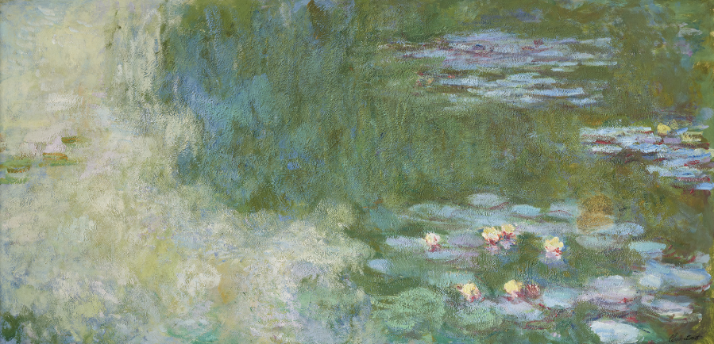

수련은 프랑스의 인상주의 화가 클로드 모네가 그린 약 250점에 달하는 유화 연작이다. 프랑스 지베르니의 모네 생가에 있는 수련 정원을 그린 작품으로, 1980년대부터 1920년대까지 30여년간에 달하는 오랜 세월동안 집중해서 그린 소재였다.
연작에 속한 모든 그림의 소재가 정원의 수련으로 공통되었다는 점에서, 연작 자체를 가리킬 땐 '수련'이란 제목으로 부른다. 그러나 그림 한점 한점마다의 제목은 연작의 명칭 그대로 '수련'인 것도 있으나 '수련이 있는 연못', '수련 연못', '수련과 일본풍 다리' 등처럼 다른 제목이 붙여진 것도 많다.
